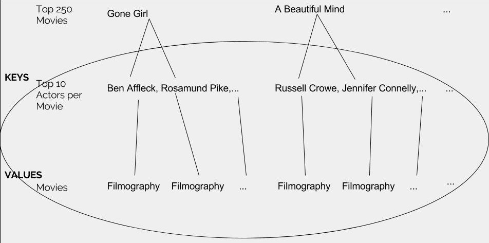

Project Goals
Our team goals are to learn about database implementation and data structures for Project 2. Utilizing the IMDb database, we are replicating the Oracle of Bacon using Redis and IMDb’s Top 250 Movies’ Actors. With Redis, we want to be able to make our own graphs, data structures and functions into Redis. After using Redis, we want to go one more step back and learn how to implement a database system like Redis.
Sprint 1
IMDB Data Collection
First, we had to learn about how to collect IMDB data. We decided to focus on the filmography of actors that have a movie in the IMDb Top 250 movies list. This is the process we went through:

We stored the list of top 250 movies from the imdb database in a dictionary using the movie ids as keys and the movie titles as values. We then used the movie ids to query the imdb database for the full information about each movie in the top 250 movies. This database call gave us the cast of each of the movies. Many movies have very large casts, so we only used the first 10 cast members in the list. We queried the database for the filmography of each actor / actress, or the list of all the movies they have been in. We then built a redis database, setting the actor / actress’s id as the key and setting the value to a tuple consisting of their name and filmography. We chose to use ids as keys because we wanted to be confident that we were using a unique identifier even if the actors / actresses had the same name.
The code for getting each actor and their entire filmography into redis can be found here: Sprint 1 Version of Data Wrangling
Our Redis Knowledge
- We all read Redis Zero to Master in 30 Minutes Part 1
- Redis is a data structure engine, where a value can only be accessed by a key
- Can add data structures the same way the 5 that are already there exist
- All you need is implementation and commands to access it!!!!!!!!!!!
- Read through and working on implementing example of adding an AVL tree data structure to Redis: Hacking Redis: Adding a Command
- Need to add commands to access it
- Implement in separate file, and require it in redis.h
- Define structure
- Define management functions
- Define outward facing commands
- Actual implementation (graph class in C as described below)
- Persistence-- RDB and or Append Only File
Next Steps
- We plan to create a graph class in C and write methods to implement this data structure in Redis. We are looking into testing both adjacency lists and adjacency matrices to both see which would better suit our needs and increase our overall knowledge. In terms of implementing these features in Redis, we are thinking about either creating a local Redis file with our graph program, or directly contributing to Redis, potentially through hiredis (its C interface).
- Once we have the graph data structure in Redis, we will create a new database with it in order to be able to traverse through actors/actresses and movies to find connections between them. We decided that it would be easiest to start by instituting Kevin Bacon as the starting point of our graph and creating our version of the Oracle of Bacon.
- After we have a working implementation for the Bacon Number, we will develop a more general search algorithm which can be applied to search between any two actors/actresses and return the connection between them. Because this is a more broad problem and we are interested in learning more about search algorithms, we will look at depth first search, breadth first search, and bidirectional search in order to be able to see the pros and cons of each.
Sprint 2
Re-Evaluated Project Steps
Coming into sprint 2, we had to re-evaluate our project goals and steps, in order to achieve what we want to learn more efficiently. While we were planning out algorithms and data structures we could use for creating graph/searching. As a result, we scrapped our original idea of using each actor's entire filmography and instead just looked at actors and their films that are in the top 250 movies.
Steps we are now doing:
- Create a dictionary of each top 250 movie as a key, and the top 10 actors for each movie as the corresponding value.
- Use the dictionary to make adjacency lists of each actor and all of the actors that share the same filmography in the top 250 movies list
- Use bi-directional breadth-first search to our adjacency lists to find shortest path between two actors
Next Steps
- Now that we have created a data structure and framework to store the actors and their corresponding actors, we are working on integrating these structures into Redis directly. Currently, we are treating each actor as a key and appending each corresponding actor as a value in a list. We are now in the process of figuring out how to add commands into Redis, and once we do that, will be able to add a command to search between two of the actors in our table.
- In terms of searching, we will start out with breadth first search for simplicity and pick one actor/actress to act as the head node. The function we write will allow us to search for the degrees of separation from that particular actor to any other actor.
- Once we have breadth first search working, we will implement bidirectional search, which is slightly more complicated to setup and code. This will allow us to choose two head nodes (any two actors) and locate the shortest path between them.
Authors and Contributors
Shivali Chandra (@skchandra), Cynthia Chen (@yunhsincynthiachen), Nitya Dhanushkodi (@ndhanushkodi) and Marena Richardson (@marenar)
Support or Contact
Having trouble with Pages? Check out our documentation or contact support and we’ll help you sort it out.